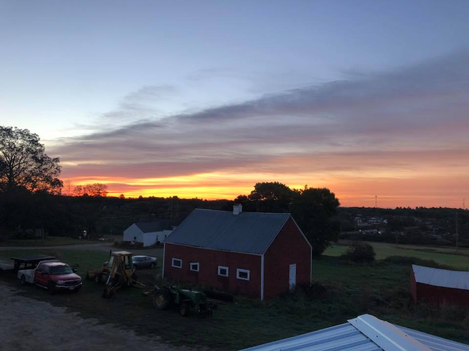

<!DOCTYPE html>
<html>
<head>
<title>overlook farms homepage</title>
<link href="styles.css" rel="stylesheet"
</head>
<Body></Body>
<B>Overlook Farms</B>

</html>

<h1> Overlook Farms</h1>

<h2>Located in Wiscasset Maine</h2>




<h3>This is whats happening on the farm</h3>

<p>At Overlook farms we can provide people with hay to feed to their horses.
Wood for the fire place on those cold winter nights.
And fresh beef for when your grilling this summer.
We'll also be entering our pumkin into the Damariscotta Pumkin festival
on Monday October 8th.</p>

<p>Links to:</p>
<nav>
<li><a href= index.html>Overlook Homepage</a> </li>
<li><a href="pumpkinfestival.html">Pumpkin Page</a></li>
<li><a href="Hay.html">Hay Bales Page</a></li>
<li><a href="Cattle%20Page.html">Cattle Page</a></li>
</nav>
